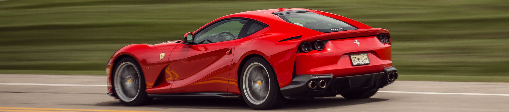

Rodjen je 1898. u malom gradiću Modeni u Italiji. Nakon što ga je otac, Alfredo Ferrari, prvi put poveo na auto-trke nedaleko Bologne, desetogodišnji Enzoostao je zapanjen pojavom tadašnjih bolida. Ipak. kroz mladost želja mu je bila postati operski pevač ili sportski novinar (Italijan – 100%). U vreme prvog svetskog rata umire mu otac i mladji brat, a on jedva preživljava bolest koja ga je zahvatila. Nakon tuge, u njemu se počela rađati želja za vožnjom trka. Tih kriznih godina posle rata teško je bilo naći posao, posle mnogih odbijanja, dobio je posao u CMN, firmi koja je reparirala stare vojne kamione. Enzov posao bio je vožnja golih šasija od Torina do Milana. Tu je usavršio svoje vozačke veštine. 1919. posle mnogo odgledanih trka odlučuje se da učestvuje na trci Targa Florio koju završava kao deveti. Zahvaljujući poznastvu sa Ugom Sivoccijem, prelazi u Alfa Romeo gde postaje vozač trka. 1920 na trci Targa Florio završava kao drugoplasirani. Osim što je bio vozač, u Alfi postaje i menadžer pokazujući svoj dar i za takve poslove. 1923. godinu obiležila su dva velika dogadaja. Oženio se Laurom, a posle najveće pobede u karijeri na Copa Acerbo, upoznaje porodicu legendarnog pilota Francesca Baracce. Baraccina je eskadrila nosila logo “cavalino rampante” – propeti konjić, kojeg je na nagovor pilotovih roditelja uzeo kao svoj znak. Konjić je ostao crne boje, a Enzo je dodao žutu podlogu, boju rodnog grada – Modene. Posle uspešnog starta, Enzo je promovisan u fabričkog vozača, iako se njegova karijera do tog trenutka zasnivala na pobedama na lokalnim takmičenjima i sa polovnim automobilima. Sada je dobio priliku da vozi u to vreme najmodernije automobile na još prestižnijem takmičenju kao što je bio Francuski Grand Prix. Kako se Alfa Romeo 1925 povukla iz trka, Enzo 1929 osniva tim Scuderia Ferrarisa sedištem u Modeni, koji je imao primarni zadatak da održava Alfine trkačke automobile koji su bili u rukama privatnih vlasnika. Omogućavao je i garantovao popravku za Alfa Romeo, a kasnije je postao i distributer za Bosch, Pirelli i Shell. Pod okrilje svoje firme doveo je Giuseppe Camparia i Tazio Nuvolari. Njegov tim je već prve godine imao pedest vozača (što stalnih što povremenih) i učestvovao je na 22 trke gde je osam puta pobedio. Tim “Scuderia Ferrari” je bila prava senzacija, to je bio privatni klub s najvećim brojem vozača. Vozači nisu imali klasičnu platu, već su dobijali deo od osvojene nagrade. Osnovna ideja je bila da Scuderia Ferrari vozači i njegovom automobilu omogući da učestvuje na trkama tako što će im plati sve potrebne takse. Zato i ne čudi kad za Enza kažu da je on jedini koji je bio u stanju da preživi surovi svet Formule 1 kao pojedinac i nezavisni učesnik.
Svetsko prvenstvo Formule 1 počinje 1950 godine, Ferrari nastupa od druge trke u Monzi, ali prvu pobedu ostvario je Argentinac Froilan Gonzalez 1951 godine na Britanskom Grand Prixu u bolidu 375 F1 kada je pobedio legendarnog Juan Manuel Fangia u dotad nepobedivoj Alfeti Tipo 159. “Izgleda mi kao da sam danas ubio vlastitu majku” – izjavio je Enzo nakon trke. Najljući suparnik bio je na kolenima. Tim je imao šansu da postane Svetski šampion pobedom na Španskom Grand Prixu, ali pred tu najznačajniju trku za ovaj mlad tim Farrarija, Enzo je odlučio da eksperimentiše i uzme nove Pirelli gume. Gume se nisu najbolje pokazale što je rezultiralo pobedom Fangia i njegovom prvom titulom svetskog šampiona. Besni čelnici Alfe nisu mogli da dopuste da jedan Ferrari, kojeg su oni izbacili, bude ispred Alfe u Formuli 1, pa povlače tada jedini logičan potez – povlače se iz trka. U sezonama 1952-53 bio je manjak bolida Formula 1, pa se Svetski Šampionat dopunio sa bolidima Formule 2. Farrari je sa modelom 500 i sa Albertom Ascarijem postaje nepobediv. 1952 od 7 trka osvaja 7, 1953 osvaja opet 7, ali sada od ukupno 8 trka. Nakon tog dvostruke titule Svetskog Šampiona Ferrari napokon postaje svetski poznata i priznata sportska marka automobila. 1954 Ascari napušta Farrari i pelazi u Lanciju gde vozi D50. Lancia je nadala tituli Svetskog Šampiona ali ti snovi su brzo prekinuti, pre svega jer se kasnilo sa proizvodnjom bolida i pogibiom Ascaria za vreme testiranja Farrarijevog bolida. Fiat kao vlasnik Lancije se povlači i prepušta je Farrariju koji je kupuje. Tako da Farrari preuzima i čuvenog dizajnera Vittorio Jano. Lancia je od ranije bila poznata po vrhunskoj motorizaciji i izradi luksuznijih automobila. Nakon dugogodišnje saradnje sa mnogim izvanrednim dizajnerima i proizvodjačima karoserija (Touring, Zagato, Vignale, Ghia i Scaglieti), Ferrari sklapa ugovor sa sa Battistom “Pinin” Farinom i počinje da proizvodi Gran Turismo automobile. Pobede na Le Manu u drugim trkama izdržljivosti proslavile se Farrari širom sveta. Saradnja sa Pinin Farinom, dizajnerskom kućom ostala je i do danas, oni dizajniraju sve Farrarije, najlepše sportske automobile na svetu. Proizvodnja sportskih automobila kod Farrarija se razlikovala od ostalih jer su drugi koristili trke za sopstveni marketing i unapredjenje prodaje, dok je Farrari prodavao kola da bi mogao da se takmiči. 1956 Juan Manuel Fangio posle povlačenja Mercedesa dolazi da vozi za ekipu Lancia – Farrari i osvaja Svetski Šampionat Formule 1. Te iste godine umire mu i sin Alfredino, poznatiji kao Dino. Skrhan od bola, Enzo sledeći model naziva baš po sinu. Tuga nije nestala i od tada pa do kraja života Enzo ne skida tamne naočare i crnu kravatu. Već sledeće godine Juan Manuel Fangio zbog ne slaganja sa Enzom prelazi u konkurentski Maserati gde osvaja svoju petu šampionsku titulu. Enzova poznata arogancija i agresivnost u komunikaciji s vozačima naterale su Fangia da nakon osvojene titule pokupi svoje stvari i uputi se u Maserati. Fangio nije bio ni prvi ni poslednji vozač koji je otišao preko noći, pa iako je bio najbolji vozač na svetu Enzo se nije nimalo uznemiravo.
Naslednik Ferrarija F12 berlinetta tako je dobio ime 812 Superfast, što znači da je kompanija ostala verna tradiciji moćnih V12 atmosferskih motora - u ovoj inkarnaciji u pitanju je 6.5 litarski agregat sa čak 800 konjskih snaga, koje su dostupne pri 8.500 obrtaja u minutu, dok je maksimalni obrtni moment 718 Nm, pri 7.000 o/min. Motor je povezan sa unapređenim sedmostepenim automatizovanim menjačem sa duplim kvačilom, koji obezbeđuje da 812 Superfast u potpunosti opravda svoje ime i da do stotke stigne za samo 2,9 s. Maksimalna brzina ista je kao kod prethodnika, i iznosi 340 km/h. Upravljački sistem koristi električni servo uređaj, a dodatna pogodnost je upravljanje na sva 4 točka, s obzirom da zadnji točkovi takođe pomažu pri skretanju automobila.
Stilski posmatrano, 812 Superfast predstavlja evoluciju dizajna F12 berlinette, ali automobil ima nešto agresivniji i dinamičniji izgled u odnosu na prethodni model. Na prednjem i zadnjem delu Ferrari 812 Superfast ima više aktivnih elemenata kojima se poboljšavaju aerodinamičke karakteristike i povećava sila prijanjanja ("downforce") pri većim brzinama.